class: inverse, center, title-slide, middle <style> .title-slide .remark-slide-number { display: none; } </style> # Applying for Research Assistant ### Zhengzi Zhou ### 15/08/2021 <svg aria-hidden="true" role="img" viewBox="0 0 512 512" style="height:1em;width:1em;vertical-align:-0.125em;margin-right:0.2em;font-size:inherit;fill:white;overflow:visible;position:relative;"><path d="M476 3.2L12.5 270.6c-18.1 10.4-15.8 35.6 2.2 43.2L121 358.4l287.3-253.2c5.5-4.9 13.3 2.6 8.6 8.3L176 407v80.5c0 23.6 28.5 32.9 42.5 15.8L282 426l124.6 52.2c14.2 6 30.4-2.9 33-18.2l72-432C515 7.8 493.3-6.8 476 3.2z"/></svg>[ucfnhou@ucl.ac.uk](mailto:ucfnhou@ucl.ac.uk) <svg aria-hidden="true" role="img" viewBox="0 0 496 512" style="height:1em;width:0.97em;vertical-align:-0.125em;margin-right:0.2em;font-size:inherit;fill:white;overflow:visible;position:relative;"><path d="M165.9 397.4c0 2-2.3 3.6-5.2 3.6-3.3.3-5.6-1.3-5.6-3.6 0-2 2.3-3.6 5.2-3.6 3-.3 5.6 1.3 5.6 3.6zm-31.1-4.5c-.7 2 1.3 4.3 4.3 4.9 2.6 1 5.6 0 6.2-2s-1.3-4.3-4.3-5.2c-2.6-.7-5.5.3-6.2 2.3zm44.2-1.7c-2.9.7-4.9 2.6-4.6 4.9.3 2 2.9 3.3 5.9 2.6 2.9-.7 4.9-2.6 4.6-4.6-.3-1.9-3-3.2-5.9-2.9zM244.8 8C106.1 8 0 113.3 0 252c0 110.9 69.8 205.8 169.5 239.2 12.8 2.3 17.3-5.6 17.3-12.1 0-6.2-.3-40.4-.3-61.4 0 0-70 15-84.7-29.8 0 0-11.4-29.1-27.8-36.6 0 0-22.9-15.7 1.6-15.4 0 0 24.9 2 38.6 25.8 21.9 38.6 58.6 27.5 72.9 20.9 2.3-16 8.8-27.1 16-33.7-55.9-6.2-112.3-14.3-112.3-110.5 0-27.5 7.6-41.3 23.6-58.9-2.6-6.5-11.1-33.3 2.6-67.9 20.9-6.5 69 27 69 27 20-5.6 41.5-8.5 62.8-8.5s42.8 2.9 62.8 8.5c0 0 48.1-33.6 69-27 13.7 34.7 5.2 61.4 2.6 67.9 16 17.7 25.8 31.5 25.8 58.9 0 96.5-58.9 104.2-114.8 110.5 9.2 7.9 17 22.9 17 46.4 0 33.7-.3 75.4-.3 83.6 0 6.5 4.6 14.4 17.3 12.1C428.2 457.8 496 362.9 496 252 496 113.3 383.5 8 244.8 8zM97.2 352.9c-1.3 1-1 3.3.7 5.2 1.6 1.6 3.9 2.3 5.2 1 1.3-1 1-3.3-.7-5.2-1.6-1.6-3.9-2.3-5.2-1zm-10.8-8.1c-.7 1.3.3 2.9 2.3 3.9 1.6 1 3.6.7 4.3-.7.7-1.3-.3-2.9-2.3-3.9-2-.6-3.6-.3-4.3.7zm32.4 35.6c-1.6 1.3-1 4.3 1.3 6.2 2.3 2.3 5.2 2.6 6.5 1 1.3-1.3.7-4.3-1.3-6.2-2.2-2.3-5.2-2.6-6.5-1zm-11.4-14.7c-1.6 1-1.6 3.6 0 5.9 1.6 2.3 4.3 3.3 5.6 2.3 1.6-1.3 1.6-3.9 0-6.2-1.4-2.3-4-3.3-5.6-2z"/></svg>[Adam Zhou3](https://github.com/AdamZhou3) <svg aria-hidden="true" role="img" viewBox="0 0 384 512" style="height:1em;width:0.75em;vertical-align:-0.125em;margin-right:0.2em;font-size:inherit;fill:white;overflow:visible;position:relative;"><path d="M172.268 501.67C26.97 291.031 0 269.413 0 192 0 85.961 85.961 0 192 0s192 85.961 192 192c0 77.413-26.97 99.031-172.268 309.67-9.535 13.774-29.93 13.773-39.464 0z"/></svg>[Centre for Advanced Spatial Analysis, UCL](https://www.ucl.ac.uk/bartlett/casa/) <a href="https://github.com/AdamZhou3/AaltoPhD" class="github-corner" aria-label="View source on GitHub"><svg width="80" height="80" viewBox="0 0 250 250" style="fill:#fff; color:#151513; position: absolute; top: 0; border: 0; left: 0; transform: scale(-1, 1);" aria-hidden="true"><path d="M0,0 L115,115 L130,115 L142,142 L250,250 L250,0 Z"></path><path d="M128.3,109.0 C113.8,99.7 119.0,89.6 119.0,89.6 C122.0,82.7 120.5,78.6 120.5,78.6 C119.2,72.0 123.4,76.3 123.4,76.3 C127.3,80.9 125.5,87.3 125.5,87.3 C122.9,97.6 130.6,101.9 134.4,103.2" fill="currentColor" style="transform-origin: 130px 106px;" class="octo-arm"></path><path d="M115.0,115.0 C114.9,115.1 118.7,116.5 119.8,115.4 L133.7,101.6 C136.9,99.2 139.9,98.4 142.2,98.6 C133.8,88.0 127.5,74.4 143.8,58.0 C148.5,53.4 154.0,51.2 159.7,51.0 C160.3,49.4 163.2,43.6 171.4,40.1 C171.4,40.1 176.1,42.5 178.8,56.2 C183.1,58.6 187.2,61.8 190.9,65.4 C194.5,69.0 197.7,73.2 200.1,77.6 C213.8,80.2 216.3,84.9 216.3,84.9 C212.7,93.1 206.9,96.0 205.4,96.6 C205.1,102.4 203.0,107.8 198.3,112.5 C181.9,128.9 168.3,122.5 157.7,114.1 C157.9,116.9 156.7,120.9 152.7,124.9 L141.0,136.5 C139.8,137.7 141.6,141.9 141.8,141.8 Z" fill="currentColor" class="octo-body"></path></svg></a><style>.github-corner:hover .octo-arm{animation:octocat-wave 560ms ease-in-out}@keyframes octocat-wave{0%,100%{transform:rotate(0)}20%,60%{transform:rotate(-25deg)}40%,80%{transform:rotate(10deg)}}@media (max-width:500px){.github-corner:hover .octo-arm{animation:none}.github-corner .octo-arm{animation:octocat-wave 560ms ease-in-out}}</style> --- class: inverse, center, middle # Introduction ### About my research experience and interests --- ## Introduction * Undergraduate at Wuhan University (2014-2018) * Remote Sensing * Land Use Change in Global Biodiversity Hotspots * Research assistant at Wuhan University (2018-2020) * Urban Scaling * Urban Form and Urban Land Expansion * Urban Modeling * MRes student at CASA, UCL (2020-2021) * Geo-Semantics Embedding * Urban Mobility ??? 只是我众多工作中的一部分，但是是 --- ## Content * Theoretical Model * GMP:Geographic Micro-process Model * Cell-Based Dynamics Model * GMP-CA : Simulating Urban Expansion * Other models * Agent-Based Urban Element Aggregation Pattern Model * Spatial Opmitization the Location of Future Cycling Infrastructure. * Independent Research * Constructing Metrics Correlation Networks to Deconstruct Urban Form * Reflection on Modeling --- class: inverse, center, middle # Theoretical Model ### GMP:Geographic Micro-process Model .footnote[Jiao, L. et al. Geographic micro-process model: Understanding global urban expansion from a process-oriented view. Computers, Environment and Urban Systems 87, 101603 (2021).] --- ## Geographic Micro-process Model - Background <figure> 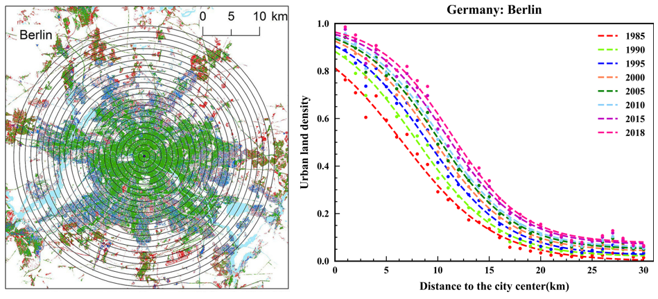 <figcaption style="line-height:30px;font-family:Sans-serif; font-size: 10px;font-weight: bold; text-align:center">Fig.1 1-km concentric buffer rings and urban land density distribution of Berlin.</figcaption> </figure> * Urban land density usually decreases from city center to suburb in an inverse S-shaped pattern * For each city, we built a series of **1-km buffers** in an increasing, stepwise manner from the city center. * For each ring, we calculated the urban land density as **the proportion of urban land area**. * A distinct **inverse S-shaped pattern** of the decrease in urban land density from the urban center to the city’s edge. --- ## Geographic Micro-process Model * Question: * How this inverse S-shaped pattern was formed and evolved? -- * Assumption: * the development probability of the vacant urban area decreases from the center outwards according to the **distance-decay rule**. * $$\begin{eqnarray} y_1 &=& r^{-\alpha}, \qquad y_2 &=& y_1+r^{-\alpha} (1-y_1) \qquad ... \qquad \end{eqnarray}$$ * Hence, the general formula of urban land density : $$y_n = 1-(1-r^{-\alpha})^n$$ -- * Validation: * We employed a nonlinear least squares method and a trust-region algorithm to fit the proposed GMP model to the cities stratified sampled from global. --- ### Geographic Micro-process Model <figure> 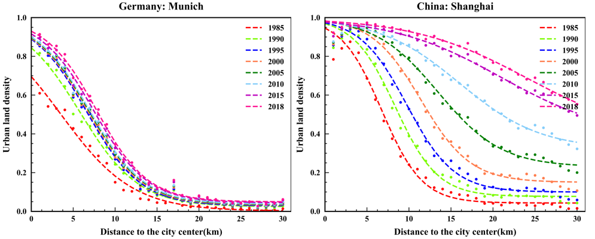 <figcaption style="line-height:30px;font-family:Sans-serif; font-size: 10px;font-weight: bold; text-align:center">Fig.2 urban land density distribution of Munich and Shanghai.</figcaption> </figure> * Results: * Disparities of global cities in terms of **urban land compactness**. * **Path dependence** of urban expansion patterns. -- * My contributions: * I take the **model validation** for global 1300 cities using google earth engine. * I compared this model with five other urban land density models and discussed the **parsimony and overfitting issues** using Bayesian information criterion (BIC). --- class: inverse, center, middle # Cell-Based Dynamics Model ### GMP-CA : Coupling Microscopic Dynamics and Macroscopic Constraints to Simulate Urban Expansion --- ### GMP-CA : Simulating Urban Expansion * Background * Cell-based dynamics models are developed from the ideas of complexity science * Each cell represents land, and the cell state's change is determined in the **local neighbourhood** of every cell. * CA is defined as $$S^{t+1} = f(S^t , S_N)$$where $S^{t+1}$ is the state of the cell at time t+1,$S_N$ is the states of neighbourhood. -- * In this model, we use CA to Simulate Urban Expansion. For each undeveloped cell, the probability of development is determined by integrating: * **the development potential**: driving factor (e.g: traffic network, slope, and DEM). * **neighborhood effect**: neighborhood development density * **constraint conditions**: (e.g. ecological protection area, natural scenic spot, etc.). * **random variable**: other uncertainties. -- * Coupling **Microscopic Dynamics** and **Macroscopic Constraints**. --- ### GMP-CA : Simulating Urban Expansion <figure> 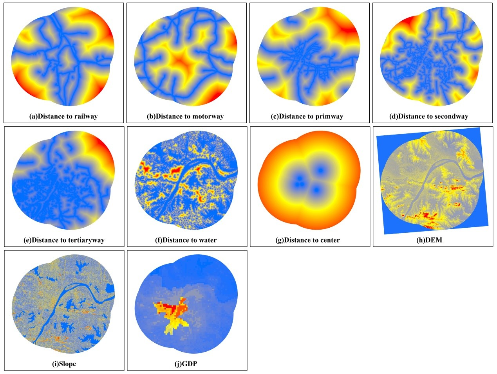 <figcaption style="line-height:30px;font-family:Sans-serif; font-size: 10px;font-weight: bold; text-align:center">Fig.3 Spatial factors using in urban simulation.</figcaption> </figure> --- ### GMP-CA : Simulating Urban Expansion <figure> 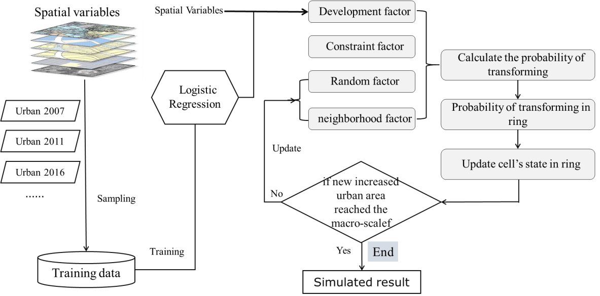 <figcaption style="line-height:30px;font-family:Sans-serif; font-size: 10px;font-weight: bold; text-align:center">Fig.4 Flow Chart of GMP-CA model</figcaption> </figure> * sampled from 2007 and 2011, trained the data to get the **driving coefficients** of spatial drivers factors. * calculated the probability of transforming and update the cell state. * update the neighbourhood and the random factor. * loop until the increased urban area reaches the **quantitative constraints**. * model validation using predicted and actual land-use in 2016. --- ### GMP-CA : Simulating Urban Expansion <figure> 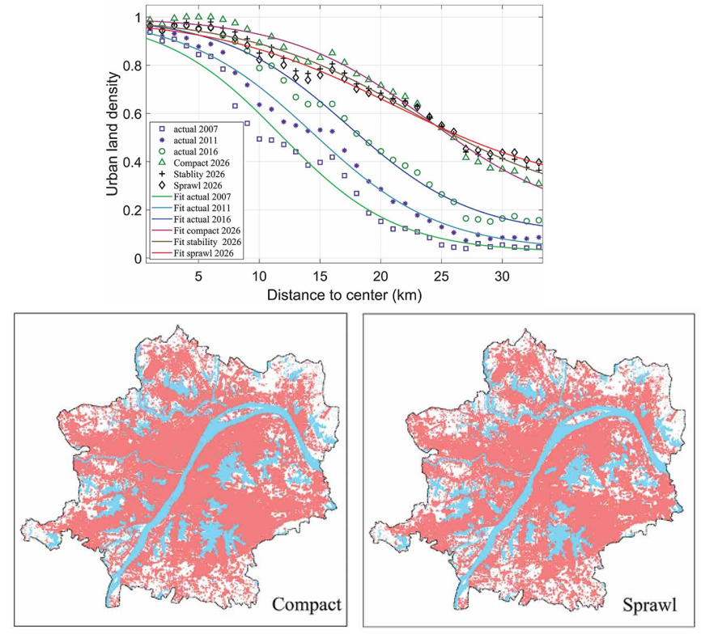 <figcaption style="line-height:30px;font-family:Sans-serif; font-size: 10px;font-weight: bold; text-align:center">Fig.5 Scenario Simulation results to 2026</figcaption> </figure> * Scenario simulation of future urban development --- ### Agent-Based Urban Element Aggregation Pattern Model <figure> 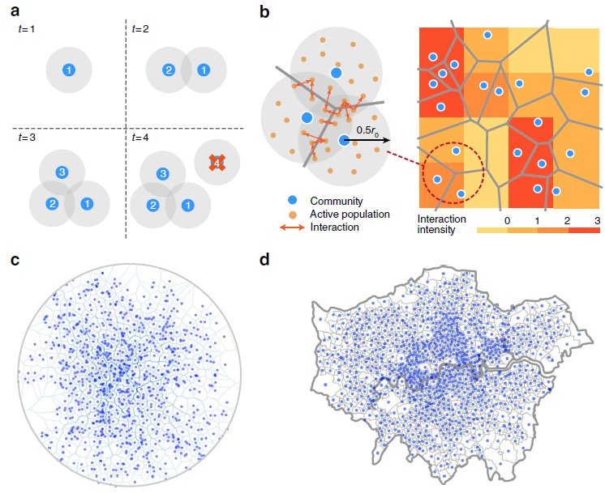 <figcaption style="line-height:30px;font-family:Sans-serif; font-size: 10px;font-weight: bold; text-align:center">Fig.6 Illustration of the spatial attraction model</figcaption> </figure> * using spatial attraction and matching growth mechanisms to reveal the evolution of spatial scaling rules. .footnote[ Ruiqi Li, Lei Dong, Zhang, J., Wang, X., Wang, W.-X., Di, Z., Stanley, H. E. (2017). Simple spatial scaling rules behind complex cities. Nature Communications, 8(1), 1841.] --- ### Spatial Opmitization the Location of Future Cycling Infrastructure. <figure> <img src="img/Opt.png" width="700pt" style="display: block; margin: auto;"> <figcaption style="line-height:30px;font-family:Sans-serif; font-size: 10px;font-weight: bold; text-align:center">Fig.7 Using greedy algorithm to find the optimal solution for potential cycling infrastructure</figcaption> </figure> * Predict parking demand in each road. * Find the optimal solution from potential locations to minimum the parking cost funtion. --- class: inverse, center, middle # Constructing Metrics Correlation Networks to Deconstruct Urban Form ### Network Approach in a Global Sample of Cities --- ## Background * **Quantitatively characterize and evaluate urban form.** * <font size="3.5">Quantifying urban form is challenged by layers of complexity which consist of pinning down what is meant by <b>the term sprawl</b> and <b>determining how it should be measured</b>.</font> * <font size="3">(Huang et al., 2007) five dimensions of the urban form, complexity, centrality, compactness, porosity and density</font>. * <font size="3">(Frenkel & Ashkenazi, 2008) Three conceptual dimensions of sprawl : mix of land-uses, scatter, density</font>. * <font size="3.5"> With more empirical studies emerged:</font> * <font size="3">(Schneider & Woodcock, 2008) Researchers often use different <font size="3" color="red">subsets of metrics that they deem appropriate</font>, further making comparison across studies extremely difficult.</font> * <font size="3">(Orenstein et al., 2014) Many <font size="3" color="red">divergent and even contradictory results</font> are produced depending on the measurement method used and the index selection.</font> * <font size="3">(Reis et al., 2016) A large number of landscape metrics are usually reported, many of which supply <font size="3" color="red">redundant information and/or confusing results</font> in an urban context.</font> * How many dimensions are there in urban form? Whether spatial metrics are actually useful or efficient in measuring particular urban form dimensions? --- ## Study Area and Data <figure> 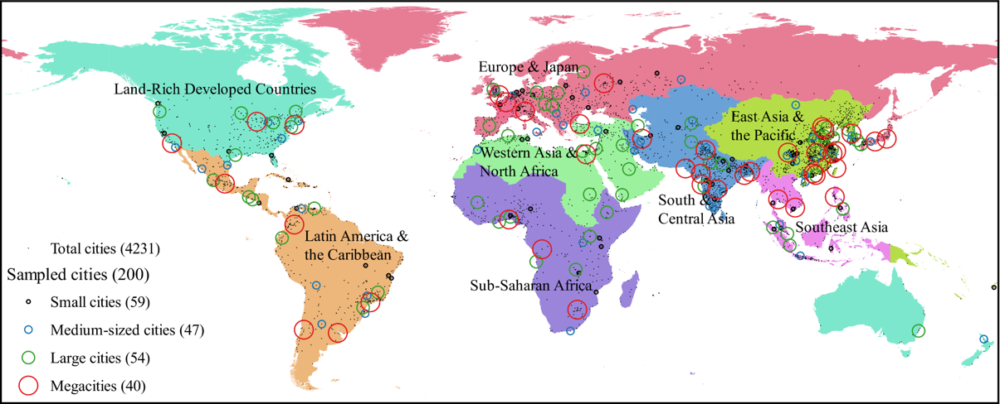 <figcaption style="line-height:30px;font-family:Sans-serif; font-size: 10px;font-weight: bold; text-align:center">Fig.1 Spatial distribution of sampled 200 cities from global 4231 cities in eight world regions.</figcaption> </figure> * Stratified sampling * Defining urban extent (Angel et al., 2016) --- ## Methods ##### Urban form metrics <figure> <figcaption style="line-height:30px;font-family:Sans-serif; font-size: 10px;font-weight: bold; text-align:center">Table 1. urban form metrics in the literature (36 in total)</figcaption> 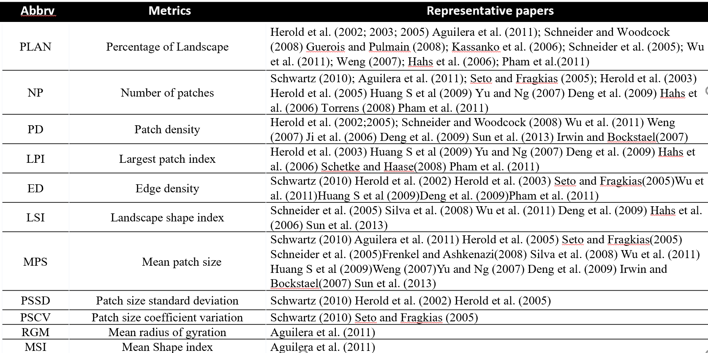 </figure> --- ## Methods <figure> 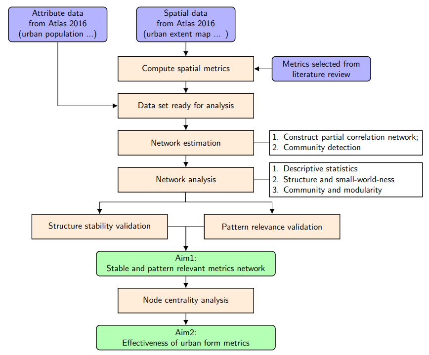 <figcaption style="line-height:30px;font-family:Sans-serif; font-size: 10px;font-weight: bold; text-align:center">Fig.2 The workflow of this article.</figcaption> </figure> --- ## Methods #### Network Construction * <font size="3.5"><b>Estimation</b>: gLasso-procedure</font> * <font size="3.5"><b>Layout</b></font> * <font size="3">Nodes with higher correlations are plotted together</font> * <font size="3.5"><b>Community detection:</b> walktrap algorithm</font> * <font size="3.5"><b>Construction</b></font> * <font size="3">Node: metrics</font> * <font size="3">Color of nodes: Factors</font> * <font size="3">Edges: Partial correlations between two metrics</font> * <font size="3">Color of edge: Positive/negative partial correlations</font> * <font size="3">Width of the edge: the strength of the correlation (Epskamp et al., 2012)</font> ##### Network Analysis * <font size="3.5">Small-world-ness index : a high clustering and high global connectivity (Humphries & Gurney, 2008)</font> * <font size="3.5">Modularity</font> * <font size="3.5">Node strength in weighted networks</font> --- ## Results ##### 1. Overall structure of the metrics network <figure> 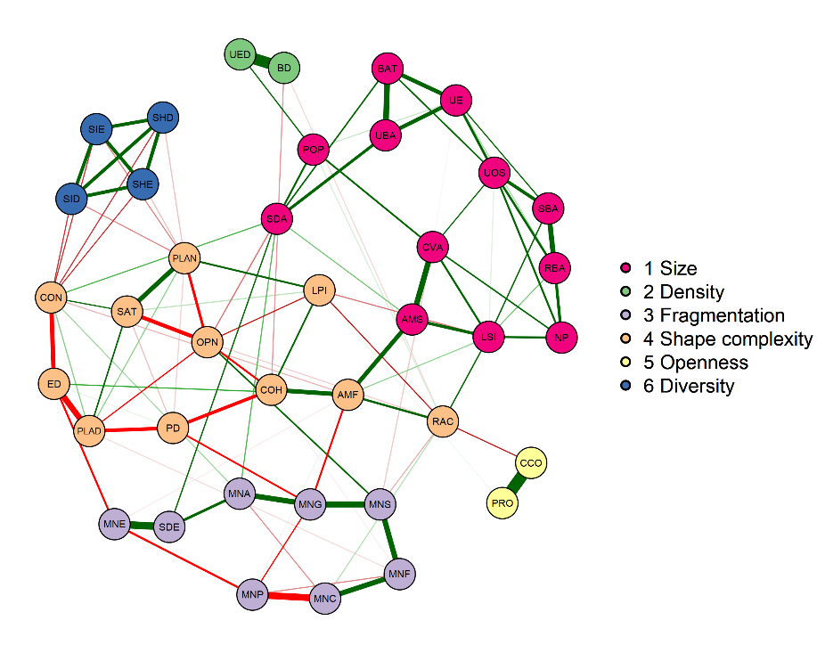 <figcaption style="line-height:30px;font-family:Sans-serif; font-size: 10px;font-weight: bold; text-align:center">Fig.3 overall estimated partial correlations network.</figcaption> </figure> --- ## Results ##### 2. Pattern relevance of metrics community <figure> 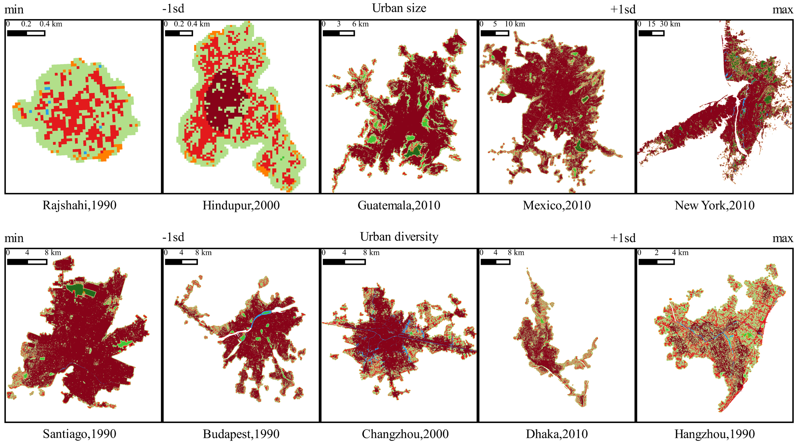 <figcaption style="line-height:30px;font-family:Sans-serif; font-size: 10px;font-weight: bold; text-align:center">Fig.4 urban form patterns.</figcaption> </figure> --- ## Results ##### 3. Pattern robustness across time, region and size <figure> 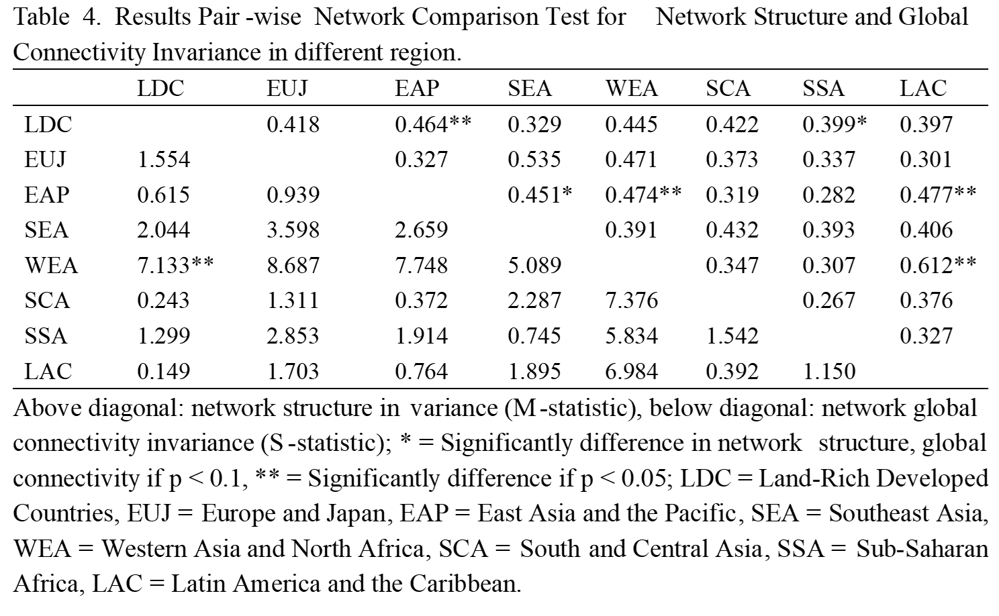 </figure> --- ## Discussion and Conclusion * <font size="3">We tested the correlation of previously used urban form metrics using data from a global sample, representing the structure of urban form metrics with a network model.</font> ##### The confusion of measuring urban form * <font size="3">Pattern relevance of metrics, stability of metrics correlation (does not change with size, region)</font> * <font size="3">Reasons for contradictory findings</font> * <font size="2.5">The complexity of the metrics makes it difficult to judge the dimensions measured by the metrics (LSI vs. ED)</font> * <font size="2.5">Selection of highly correlated metrics between groups makes the measure invalid (AMS vs. AMF)</font> * <font size="2.5">Priori knowledge is not tested. (NP)</font> -- ##### Applicability of the network approach * <font size="3">The metrics themselves are highly correlated (Reis et al., 2016) and network methods can <font size="3" color="red">visually and effectively portray the correlation structure</font></font> * <font size="2.5">Network methods are essentially a development of factor analysis methods, correlation methods</font> * <font size="2.5">Consistency with findings obtained from past methods (Schwarz, 2010)</font> -- ##### Limitations and Future Research * <font size="3">Newly created metrics should be tested for correlation with existing indicators</font> --- class: inverse, center, middle # Experience and Reflections on Modeling and Programming --- ### Reflections on Modeling * "All models are wrong but some are useful". * "With four parameters I can fit an elephant, and with five I can make him wiggle his trunk." -- John von Neumann * "The longing to behold this **pre-established harmony** is the source of the inexhaustible patience and perseverance" -- Albert Einstein --- ### Experience on Programming * Experience * I learned programming mainly through open-source courses and by reproducing other's projects. * I used to do some **C#**, **C++**, **Matlab**, **Mathematica**, and **Visual Basic** projects, but I have forgotten them all. * In an internship as an algorithm engineer, I received comprehensive training in data science and computer science-related training such as **Linux** systems and **databases**. * Currently, I prefer **python** for spatial analysis and modeling, **R** for scientific plots, **javascript** for visualization projects, and **LaTex** for writing. I recently used **go** to learn statistical causal inference, and this language is not bad. * Most of my programming time is spent on switching between google, GitHub, and overflow, including writing this presentation in **HTML** * seeing an uncertainty have a definite outcome is the part of programming that I find the most fascinating. * My code * [My github](https://github.com/AdamZhou3) * [My Scientific Plots Gallery](https://doc.zzzhou.me/zh/latest/0_SNA/50_plots.html) * [My highly upvoted answer about recursion on leetcode ](https://leetcode-cn.com/problems/remove-nth-node-from-end-of-list/solution/python-di-gui-by-adamch0u/) --- class: inverse, center, middle # Thanks! ### All faults are mine. ??? My research interests focus on mining, comparing and integrating various types of location data (e.g., smart card data, social media data, GPS tracked running and cycling data) for a better picture of variabilities of mobility patterns across spatial and temporal dimensions and social groups.